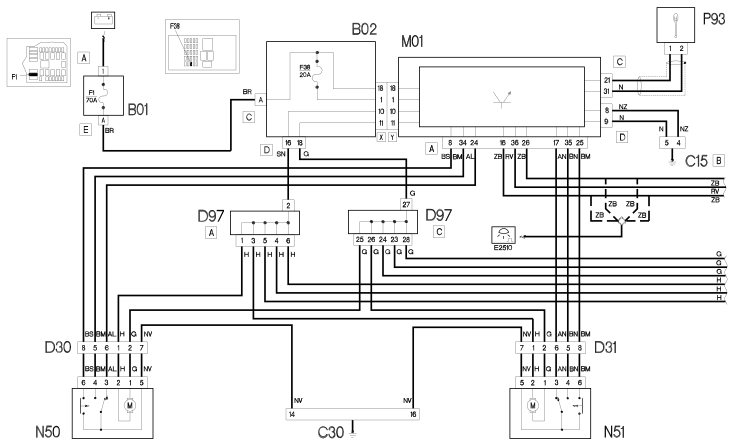
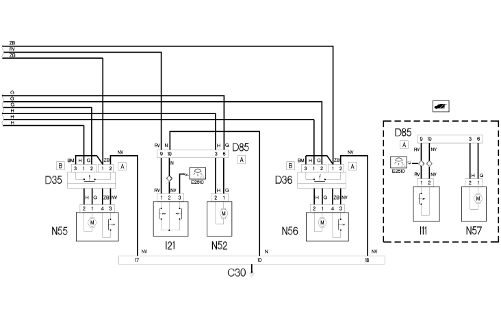

E3040 CENTRAL LOCKING - WIRING DIAGRAM
- Path
- Electrical equipment > 1 ELECTRICAL FUNCTIONS > E30 ELECTRICALLY ACTIVATED DEVICES > E3040 CENTRAL LOCKING > E3040 CENTRAL LOCKING - WIRING DIAGRAM
- Kind
- wiring diagram
- Applies to
- engines: 1.2 8v, 1.6 16v, 1.3 JTD 16V, 1.9 JTD 8V, 1.9 DIESEL; all production periods
- Interactive page
- https://sloeber94.github.io/elrnDB-fDbl/en/#/223002004
Applies to: engines: 1.2 8v, 1.6 16v, 1.3 JTD 16V, 1.9 JTD 8V, 1.9 DIESEL; all production periods
Wiring diagram


COMPONENTS
Component code | Name | Assembly reference |
|---|---|---|
Engine compartment junction unit | - | |
Engine compartment junction unit | ||
Engine compartment junction unit | ||
Junction unit under dashboard | - | |
Junction unit under dashboard | ||
Facia earth, driver's side | - | |
Left rear earth | - | |
Right sliding side door coupling | - | |
Right sliding side door coupling | - | |
Front left door connection | - | |
Front right door connection | - | |
Rear left door connection | - | |
Rear right door connection | - | |
Tailgate rear seal/ | - | |
Tailgate/ rear coupling | - | |
Short circuiting coupling | - | |
Boot opening switch | - | |
Boot opening switch | ||
Switch on rear door | ||
Body computer | - | |
Body computer | ||
left sliding side door lock geared motor | - | |
Right sliding side door lock geared motor | - | |
Left front door lock geared motor | ||
Right front door lock geared motor | ||
Rear door lock geared motor | ||
Left rear door lock geared motor | ||
Right rear door lock geared motor | ||
Boot lock gearmotor | - | |
Aerial for alarm and central locking receiver | - |
Topics linked from this page (30)
- 1004B POWER UNIT ASSEMBLY
- 5505A multi-function components
- 7005N front door central locking system
- 7015B tailgate locking/opening devices
- 7020N sliding side door central locking
- 7020P swinging rear door central locking
- B001 JUNCTION UNIT
- B002 JUNCTION UNIT UNDER DASHBOARD
- C015 DASHBOARD EARTH, DRIVER'S SIDE
- C30 LEFT REAR EARTH ( REAR )
- D30 FRONT LEFT DOOR CONNECTION
- D031 REAR/PASSENGER FRONT DOOR COUPLING
- D085 TAILGATE/REAR SEAL
- D097 SHORT CIRCUITING COUPLING
- D196 LEFT SLIDING SIDE DOOR COUPLING
- D197 RIGHT SLIDING SIDE DOOR COUPLING
- D35 REAR/LEFT REAR DOOR COUPLING
- D36 REAR/RIGHT REAR DOOR COUPLING
- I11 BOOT OPENING SWITCH ( LEFT TAILGATE )
- I21 SWITCH ON REAR DOOR ( LEFT TAILGATE )
- M001 BODY COMPUTER
- N50 LEFT FRONT DOOR LOCK GEARED MOTOR
- N051 PASSENGER FRONT DOOR LOCK GEARED MOTOR
- N52 REAR DOOR LOCK GEARED MOTOR ( LEFT TAILGATE )
- N57 BOOT LOCK GEARMOTOR ( LEFT TAILGATE )
- N166 LEFT SLIDING SIDE DOOR LOCK GEARED MOTOR
- N167 RIGHT SLIDING SIDE DOOR LOCK GEARED MOTOR
- N55 LEFT REAR DOOR LOCK GEARED MOTOR
- N56 RIGHT REAR. DOOR LOCK GEARED MOTOR
- P093 RECEIVER AERIAL FOR ALARM AND CENTRAL LOCKING